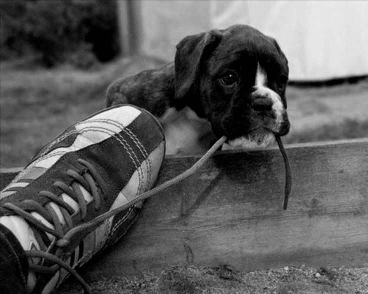

Entre las más comunes, destacan la displasia de cadera, la torsión gástrica, la estenosis
aórtica, el hipotiroidismo, y la aparición de tumores, tanto malignos como benignos..

Tumores
Son más comunes en los Bóxer a partir de los 8 años, por lo
que es recomendable hacer revisiones periódicas a los perros de esta raza, con
el objetivo de detectarlos y poderles aplicar un tratamiento de manera precoz.
Hipotiroidismo
Una de las disfunciones a tener en cuenta en estos perros.
Sus principales síntomas son la apatía, la obesidad, problemas en el
pelaje, y alteraciones del comportamiento.
Displasia de cadera
Enfermedad hereditaria. Se trata de un trastorno óseo que impide
que la articulación de la cadera y la cabeza del fémur encajen correctamente, y que
produce un intenso dolor cuando el perro hace algún ejercicio, así como una cojera
ostensible.
Torsión gástrica
Problema común en perros del tamaño del Bóxer. Su origen se
encuentra en la falta de resistencia de los ligamentos que sujetan el estómago, y puede
producir que éste se gire sobre si mismo cuando el perro hace algún movimiento.